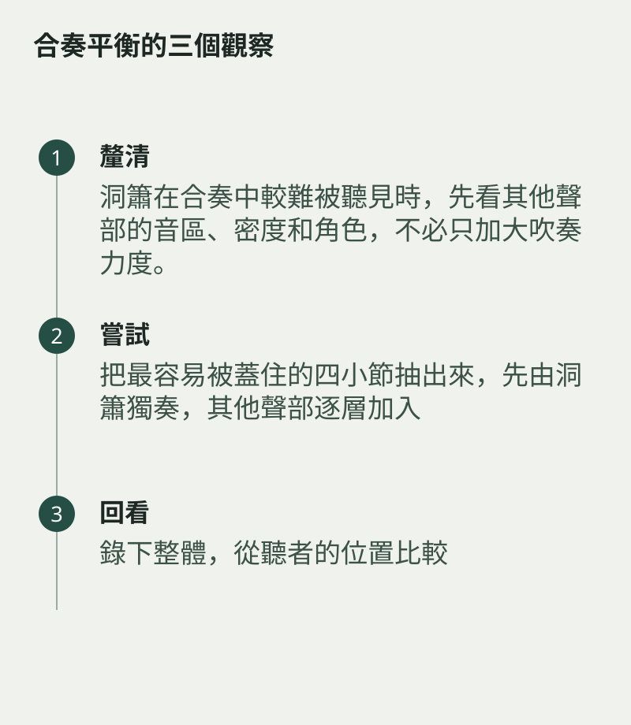

洞簫在合奏中較難被聽見時，先看其他聲部的音區、密度和角色，不必只加大吹奏力度。從簡單四小節開始，讓伴奏留出空間，再逐步增加層次。
合奏平衡
用整體錄音檢查主旋律與入口，討論具體位置，比互相要求細聲更有效。
把最容易被蓋住的四小節抽出來，先由洞簫獨奏，其他聲部逐層加入。留意遮蓋從哪一層開始，再討論音區、密度或力度調整。只叫某一方更大聲，未必能解決音樂角色不清的問題。

錄下整體，從聽者的位置比較
錄下整體，從聽者的位置比較。合奏的平衡需要彼此讓位，當主線清楚，每件樂器也更容易保留自然的聲音。